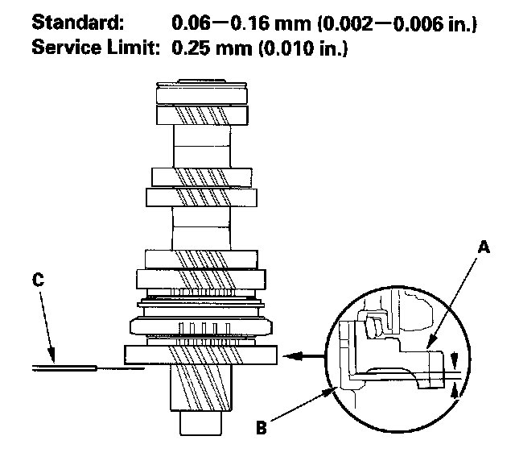
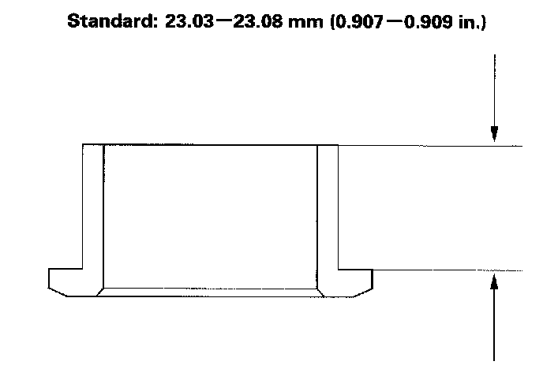
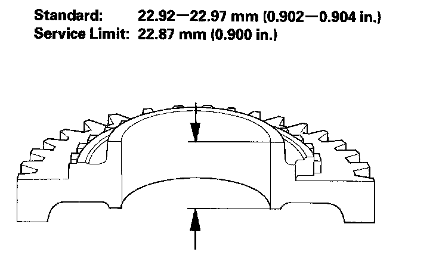
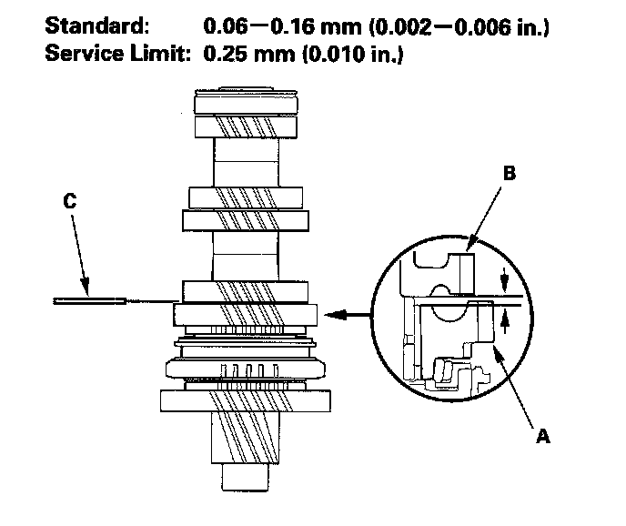
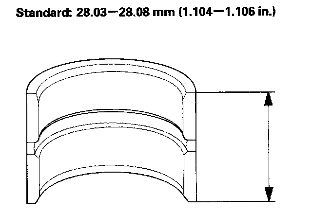
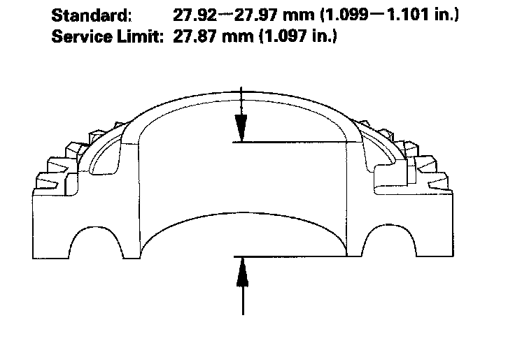

Countershaft Assembly Clearance Inspection
Countershaft Assembly Clearance Inspection1. Measure clearance between 1st gear (A) and the distance collar (B) with a feeler gauge (C) If the clearance is more than the service limit, go to step 2.

2. Measure length of the distance collar as shown.
^ If the length is not within the standard, replace the distance collar.
^ If the length is within the standard, go to step 3.

3. Measure thickness of 1st gear.
^ If the thickness is less than the service limit, replace 1st gear.
^ If the thickness is within the service limit, replace the 1st/2nd synchro hub and reverse gear as a set.

4. Measure clearance between 2nd gear (A) and 3rd gear (B) with a feeler gauge (C). If the clearance is more than the service limit, go to step 5.

5. Measure length of the distance collar.
^ If the length is not within the standard, replace the distance collar.
^ If the length is within the standard, go to step 6.

6. Measure thickness of 2nd gear.
^ If the thickness is less than the service limit, replace 2nd gear.
^ If the thickness is within the service limit, replace the 1st/2nd synchro hub and reverse gear as a set.
